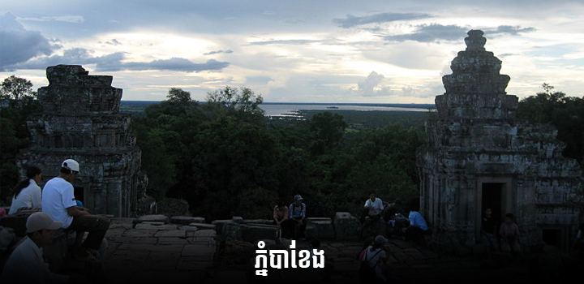
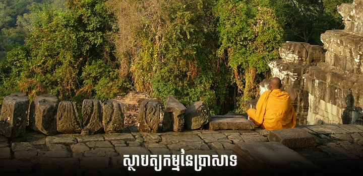
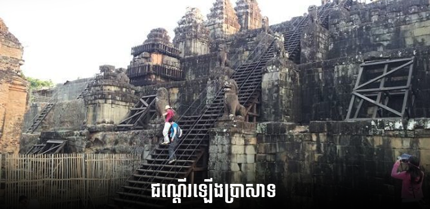
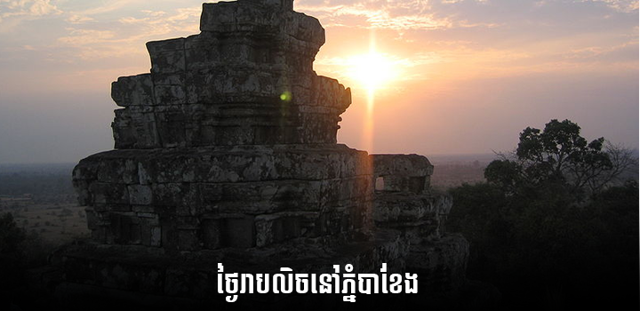

ប្រាសាទភ្នំបាខែង
១. ប្រវត្តិប្រាសាទ
ប្រាសាទភ្នំបាខែងត្រូវបានកសាងនៅឆ្នាំ៩០៧នៃគ.ស ក្នុងរាជកាលព្រះបាទយសោវរ្ម័នទី១។ ប្រាសាទនេះស្ថិតនៅចំពីលើកំពូលភ្នំធម្មជាតិមួយ ដែលមានទីតាំងនៅចំកណ្តាលទីក្រុងយសោធរបុរៈ ឬអង្គរទី១ ហើយស្ថិតនៅចន្លោះប្រាសាទអង្គរវត្ត និងក្រុងអង្គរធំ។ ចាប់ពីជើងភ្នំរហូតដល់កំពូលនៃប្រាសាទមានកម្ពស់ ៧៨ម៉ែត្រ ប្រាសាទនេះស្ថិតនៅចន្លោះភ្នំពីទៀតដែរគឺភ្នំក្រោម និងភ្នំបូក
ប្រាសាទភ្នំបាខែងជាប្រាសាទមួយស្ថិតនៅលើភ្នំធម្មជាតិ ដែលគេចាត់ទុកជា ប្រាសាទភ្នំមានតួប៉មប្រាំខ្វែងគ្នា និងមានប្រាំថ្នាក់។ ប្រាសាទនេះស្ថិតនៅខាងឆ្វែងដៃផ្លូវពី អង្គរវត្តទៅ អង្គរធំ ជាកន្លែងដែលអាចទាក់ទាញភ្ញៀវទេសចរបានយ៉ាងច្រើននៅពេលថ្ងៃលិច។ ប្រាសាទនេះកសាងឡើងនៅចុងសតវត្សរ៍ទី៩ និងដើមសតវត្សរ៍ទី១០ នៅរាជព្រះបាទយសោវរ្ម័នទី១ (៨៨៩-៩១០) ដែលគោរពព្រហ្មមញ្ញសាសនា។ ភ្នំបាខែងមានកំពស់ ៦៥ម។ ប្រាសាទភ្នំបាខែងមានកំពូល ១០៩ និងមានកំពស់៤៥ម។ ប្រាសាទនេះតំណាងឱ្យភ្នំព្រះសុមេរុ។ ប្រាសាទនេះមាន៧ជាន់ គឺជាន់ក្រោម ថ្នាក់ទាំងប្រាំ និងជាន់លើ ដែលតំណាងឱ្យឋានសួគ៌៧ជាន់របស់ ព្រះឥន្ទនៅក្នុងទេវកថារបស់ព្រហ្មញ្ញសាសនា។

កនែ្លងដែលភ្ញៀវទេសចរបរទេស តែងតែមកពពាក់ពពូនគ្នា មុនពេលដែលពួកគេត្រូវបញ្ចប់ ដំណើរទេសចរណ៍នៅលើទឹកដី ខេត្តសៀមរាប មុនពេល ដែលរាត្រីកាលមកដល់នោះ គឺប្រាសាទភ្នំបាខែង ទីនោះគឺជាទីប្រជុំនូវភ្ញៀវទេសចរ រាប់រយនាក់ក្នុងមួយថៃ្ងៗ ដើម្បីមើលថៃ្ងលិច និងមើលទេសភាព នៅតំបន់អង្គរស្ទើរតែទាំងមូល ។
២. ស្ថាបត្យកម្មនៃប្រាសាទ

ប្រាសាទនេះពិតជាមានលក្ខណៈពិសេសដោយសារតែប្រាង្គទាំង ១០៨មានលក្ខណៈតម្រៀបស្មើៗគ្នាគឺ ១២ ប្រាង្គធំកណ្តាលមួយនៅជាន់ខាងលើ។ សព្វនេះ ប្រាង្គមួយចំនួនធំត្រូវបានដួលរលំ។ ប្រាង្គទាំង១២ នៅតាមថ្នាក់និមួយៗគឺតំណាងឱ្យសត្វទាំង១២ នៃឆ្នាំ ហើយប្រាង្គទាំង ១០៨នោះ ប្រហែលជានិមិត្តសញ្ញានៃចន្លោះពេលតាមច័ន្ទគតិទាំង៤ ដែលមានរយះពេល ២៧ថ្ងៃ នៃចន្លោះពេលនិមួយៗ។ នៅតាមទិសនិមួយៗ យើងអាចមើលតែ ៣៣ប្រាង្គប៉ុណ្ណោះ នេះតំណាងឱ្យចំនួនទេវតាទាំង៣៣ ក្នុងព្រហ្មមញ្ញសាសនា។
ជណ្តើរឡើងប្រាសាទនេះមានលក្ខណៈចោទខ្លាំង។ នៅតាមជណ្តើរនៃថ្នាក់ទាំង៥ មានតោឈយាមផ្លូវ។ ប្រាសាទនេះមានកំពែងថ្មបាយក្រៀមព័ទ្ធជុំវិញ ដែលមានគោបុរៈ។ ក្រៅពីនេះមានកូនប្រាសាទនៅខាថជើងដែលមានតំកល់លឹង្គពីរ និងមានបណ្ណាល័យពីរ។ នៅលើភ្នំនេះមានព្រះបាទជាន់ទុកដែលស្ថតនៅចំកណ្តាល នៃផ្លូវចូលទៅកាន់ប្រាសាទ។

នៅប្រាង្គកណ្តាលដើមឡើយមានតំកល់លឹង្គព្រះឥសូរ។ ប្រាង្គនេះមានទ្វាចូលតាមទិសទាំងបួន។ ប្រាង្គទាំងបួននៅជាន់ខាងលើក៏មានតំកល់លឹង្គព្រះឥសូរផងដែរ តែមានទ្វាចូលតែពីរទិស។ ប្រាង្គកណ្តាលមានចំលាក់អប្សរា។ សិលាចារិកមាននៅផ្នែកខាថលិចនៃទ្វាខាងជើងនៃប្រាង្គកណ្តាល។ តាមសិលាចារិក ប្រាសាទភ្នំបាខែងគឺស្ថិតនៅចំកណ្តាលទីក្រុង យសោធបុរ។ នេះត្រូវបានបញ្ជាក់ដោយការរកឃើញស្លាក់ស្នាមកំពែងចាស់របស់ទីក្រុង នៅចុងសតវត្សរ៍ទី៩។ ប្រាសាទនេះមានឈ្មោះដើមថា យសោធរគិរី ។ ក្រោយមកគេហៅថា ភ្នំកណ្តាល ។ ការហៅនេះប្រហែលជាគេគិតទៅលើការប្រៀបធៀបរវាងភ្នំបូក និងភ្នំក្រោម ហើយភ្នំនេះនៅកណ្តាលគេ។ បច្ចុប្បន្នគេហៅថាប្រាសាទភ្នំបាខែង។ យើងរកឃើញឈ្មោះនេះជាលើកដំបូងនៅក្នុងសិលាចារិករបស់ប្រាសាទនៅសតវត្សរ៍ទី១៦។
